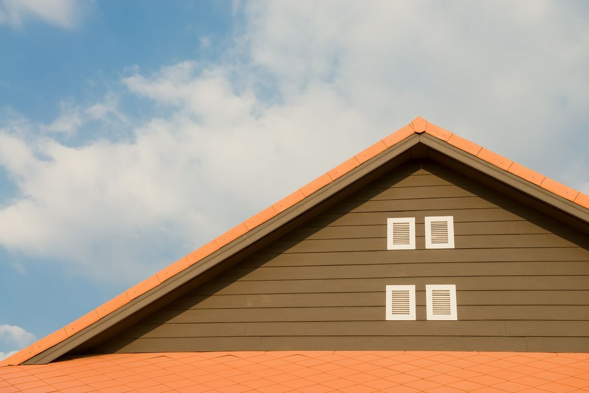

Residential and commercial roofing
Residential and commercial roofing since 2009.
Family-owned roofing in Jackson since 2009, with free estimates and 24-hour emergency service.

Mark's Roofing Company is a family-owned roofing contractor in Jackson, in business since 2009. The company is run by owner Mark Hale and offers residential and commercial roofing, including repair, full replacement, metal and shingle roofing, roof coating, maintenance, inspections, storm-damage repair, and insurance claim assistance. The company is GAF Certified.
Residential and commercial roofing since 2009.
Roof repair.
Full roof replacement.
Metal and shingle roofing.
Roof coating.
Roof maintenance.
Roof inspections.
Storm-damage repair.
Insurance claim assistance.
GAF Certified, with a GAF lifetime warranty term and a 5-year workmanship warranty, per the listing.
Free estimates.
24-hour emergency service.
Mark's Roofing Company is a family-owned roofing contractor in Jackson since 2009, run by owner Mark Hale. Call (731) 446-3744 for a free estimate or for 24-hour emergency service.


All gallery photos are stock photos, labeled as such. They show roofing work, not this company's crews.
Address: 38 Old Hickory Cove, Jackson, TN
Hours: No office hours are published. 24-hour emergency service is available.
Call to ask about a visit time. Free estimates are available.
Phone: (731) 446-3744
Mark's Roofing Company serves Jackson, TN. Questions? Call (731) 446-3744.